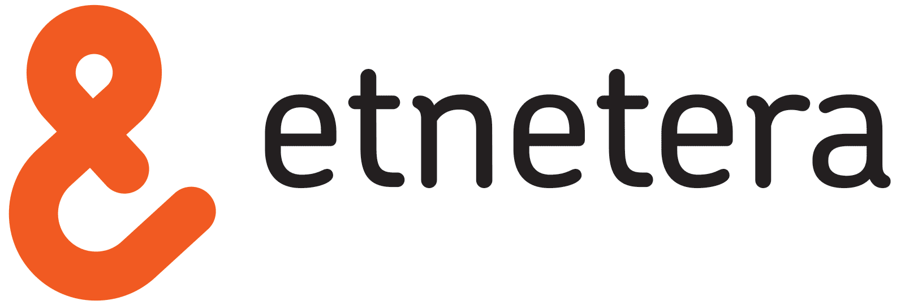

Od modulů
k tachyonům
a zase zpět
Petr Koláček

Naučit se přemýšlet v modulech je zásadní!
- přehlednější
- zapouzdřené = méně náchylné na chyby
- umožňuje práci několika vývojářů najednou
Moduly jsou super, ale ...
... co s projektem, kde se grafik rozjde naplno?


více než
30 %
CSS předpisů se stále opakuje
Utilitární třídy nejsou nic nového
projekt z roku 2004
.ifl { float: left; margin: 0 1em 1em 0; }
.ifr { float: right; margin: 0 0 1em 1em; }
.fr { float: right; }
.fl { float: left; }
.cb { clear: both; font-size: 1px; line-height: 0; }
.cl { clear: left; line-height: 0; }
.cr { clear: right; line-height: 0; }
.nw { white-space: nowrap; }
.b { border: 3px double #ddd; }
.dn { display: none; }
.sep2 { height: 2em; }
.sep3 { height: 3em; }
.sep4 { height: 4em; }
Co takhle použít utilitární toolkit nebo framework?
| Toolkits: | Frameworks: |
|---|---|
| Shed.css | turretcss |
| Tachyons (73 kB) | Expressive CSS |
| Basscss | Tailwind CSS |
| Beard | Solid |
Micro Tachyons (7 kB)

EMMET
- umí ho nativně kdejaký editor (Aptana/Eclipse, Atom, VS Code, Notepad++)
- používá krátké a poměrně srozumitelné zkratky - ideální pro názvy našich subatomárních tříd (dn, posa, mb1r)
- díky tomu lze knihovnu jednoduše rozšiřovat při zachování konvence pojmenovávání